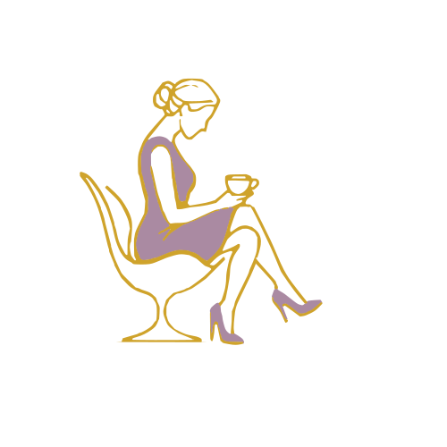

DarrMilly grows out of a conviction learned along the way: life offers no guarantees and sometimes asks you to rebuild everything, yet no fall leaves you empty-handed.
By Maria Dunn
Leave your email to receive a short guide with seven reflections and writing prompts for rebuilding. No noise, no magic formulas.
Hello,
Thank you for being here.
Sometimes life changes in a way we didn’t expect. There are moments when we need to pause, listen to what we feel, and remember that even when something has shifted, our worth is still within us.
That is why I want to share 7 Questions to Start Again with you, a brief reflection workbook I created to keep you company.
It is not a challenge—you do not have to answer all seven questions or find every answer today. You can start with the one that resonates most with you, write at your own pace, or come back whenever you need.
My wish is that these pages give you a moment to listen to yourself, recognize what you have learned, and discover that small step you can take from where you stand.
Remember: you never start over from scratch. You carry everything you have learned with you, even what you are still trying to understand.
With warmth,
Maria Dunn
DarrMilly · Starting again without erasing what was lived